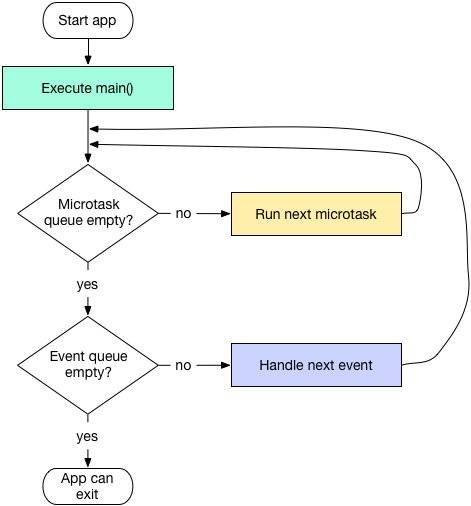

微任务队列
在Dart中还存在另一个队列：微任务队列（Microtask Queue）。
- 微任务队列的优先级要高于事件队列；
- 也就是说
事件循环都是优先执行微任务队列中的任务，再执行事件队列中的任务；
那么在Flutter开发中，哪些是放在事件队列，哪些是放在微任务队列呢？
- 所有的外部事件任务都在事件队列中，如IO、计时器、点击、以及绘制事件等；
- 而微任务通常来源于Dart内部，并且微任务非常少。这是因为如果微任务非常多，就会造成事件队列排不上队，会阻塞任务队列的执行（比如用户点击没有反应的情况）

如何创建微任务
import "dart:async";
main(List<String> args) {
scheduleMicrotask(() {
print("Hello Microtask");
});
}
Future的代码是加入到事件队列还是微任务队列呢
Future中通常有两个函数执行体：
- Future构造函数传入的函数体
- then的函数体（catchError等同看待）
那么它们是加入到什么队列中的呢？
- Future构造函数传入的函数体放在事件队列中
- then的函数体要分成三种情况：
- 情况一：Future没有执行完成（有任务需要执行），那么then会直接被添加到Future的函数执行体后；
- 情况二：如果Future执行完后就then，该then的函数体被放到如微任务队列，当前Future执行完后执行微任务队列；
- 情况三：如果Future世链式调用，意味着then未执行完，下一个then不会执行；
// future_1加入到eventqueue中，紧随其后then_1被加入到eventqueue中
Future(() => print("future_1")).then((_) => print("then_1"));
// Future没有函数执行体，then_2被加入到microtaskqueue中
Future(() => null).then((_) => print("then_2"));
// future_3、then_3_a、then_3_b依次加入到eventqueue中
Future(() => print("future_3")).then((_) => print("then_3_a")).then((_) => print("then_3_b"));
示例:
import "dart:async";
main(List<String> args) {
print("main start");
Future(() => print("task1"));
final future = Future(() => null);
Future(() => print("task2")).then((_) {
print("task3");
scheduleMicrotask(() => print('task4'));
}).then((_) => print("task5"));
future.then((_) => print("task6"));
scheduleMicrotask(() => print('task7'));
Future(() => print('task8'))
.then((_) => Future(() => print('task9')))
.then((_) => print('task10'));
print("main end");
}
代码执行的结果是：
main start
main end
task7
task1
task6
task2
task3
task5
task4
task8
task9
task10
代码分析：
- 1、main函数先执行，所以
main start和main end先执行，没有任何问题； - 2、main函数执行
过程中，会将一些任务分别加入到EventQueue和MicrotaskQueue中； - 3、task7通过
scheduleMicrotask函数调用，所以它被最早加入到MicrotaskQueue，会被先执行； - 4、然后开始执行
EventQueue，task1被添加到EventQueue中被执行； - 5、通过
final future = Future(() => null);创建的future的then被添加到微任务中，微任务直接被优先执行，所以会执行task6； - 6、一次在
EventQueue中添加task2、task3、task5被执行； - 7、task3的打印执行完后，调用
scheduleMicrotask，那么在执行完这次的EventQueue后会执行，所以在task5后执行task4（注意：scheduleMicrotask的调用是作为task3的一部分代码，所以task4是要在task5之后执行的） - 8、task8、task9、task10一次添加到
EventQueue被执行；